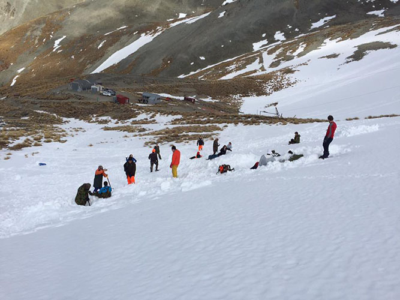

ATC Website
As part of my Digital Technology class in Year 13, I created a client-driven website.
We had to find our own clients, of which I sought out Mr Beveridge from Oamaru's Air Training Corps.
Together we made a website to promote the Squadron that can be found
here.
What ATC is
The Air Training Corps, or ATC, is a New Zealand youth organisation.
ATC is part of a bigger military-styled group called the New Zealand Cadet Forces (NZCF).
It is for teenagers of high school age.
I was a member throughout high school so decided when searching for a client that I would ask Squadron Leader Derek if he would like a website made for the Oamaru squadron.
The aim of the website was to promote the squadron and inform existing members of relevant news, as defined by Derek.

Website process
I started the website by hand-drawing basic layouts.
I then had a meeting with my client, showed him the sketches and had a discussion on what the content and style of the website could be.
Next I refined the sketches. After establishing the layout I researched fonts, colours, images, text and the site structure.
Throughout the process I regularly communicated with my client to get his opinions. I also consulted primary and secondary stakeholders, recording and evaluating their feedback.
After creating conceptual designs on paper and finalising the designs, I created high fidelity models on Photoshop.
Lastly, I created the website using Dreamweaver.
After the project was done, my client wished to keep the website so we arranged webhosting with HostPapa.
We made the domain name
26squadron.org.nz because other squadrons across New Zealand had a similar URL.